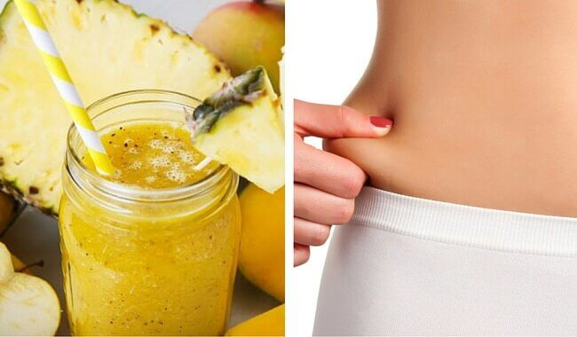

The Benefits of Fruits:Pineapple
Pineapples are tropical fruit that are rich in vitamins, enzymes and antioxidents.
They may help boost the immune system, build strong bones and aid indigestion. Also,
despite their sweetness, pineapples are low in calories.The pineapple fruit is known
to offer several benefits. Pineapple can be added to kebabs, smoothies, and a whole
range of salads. Pineapple can be added to kebabs, smoothies, and a whole range of salads.
Every pineapple has the exact same number of hexagonal sections on it, no matter the size
and shape.The name "pineapple" came from European explorers who thought the fruit looked like
a pinecone with flesh like an apple. Canned pineapple was first made in 1901 but wasn't widely
available until engineer Henry Ginaca invented a machine in 1911 that could remove the outer shell,
inner core and both ends of 100 pineapples in less than a minute! This machine, known as the
"Ginaca machine", is still used in pineapple canneries today. You can't put fresh pineapple in Jell-O
because the bromelain content prevents gelatin from setting. Canned pineapple, on the other hand, can be
added to Jell-O because the canning process destroys the bromelain.

Health
- Pineapples are used in pharmaceutical industry since they contain substances and vitamins that are beneficial for human health
- The health benefits of pineapple include their ability to improve respiratory health, cure coughs and colds, improve digestion, help you lose weight, strengthen bones, improve oral health, boost eye health, reduce inflammation, prevent cancer,improve heart health, fight off infections and parasites, improve the immune system and increase circulation.
- There are many people who have motion sickness. They can eat pineapple before starting their journey. Pregnant women who are going through nausea problem can also opt for pineapples.
- Eating pineapples promotes healthy long and luscious hair
- Eat the required portion of the pineapple to strengthen your teeth and gums. It has calcium to strengthen the teeth.
- Helps to loose weight!